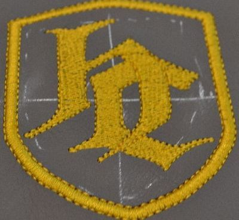

Машинная вышивка на коже Киев на заказ
Примеры применения вышивки на коже:
- Вышивка на алькантаре
- Вышивка на автомобильных чехлах (авточехлах)
- Вышивка на автомобильных ковриках (автоковриках)
- Вышивка на экокоже
- Вышивка на кожзаме
- Вышивка на автомобильном кожзаме (авто винил)
Вышивка на кожаных изделиях:
- Вышивка на кожаной куртке
- Вышивка на кожаной сумке
- Машинная вышивка на любых других кожаных изделиях.
Отдельным спросом пользуются мото нашивки и байкерская символика. Байкерские нашивки на спину украсят образ любого мотоциклиста. Купить мото нашивки на заказ Вы можете как в городе Киев, так и по всей Украине. Доставка по Украине осуществляется службами перевозок.
Как сделать машинную вышивку на коже
 Вышивка на коже - сложный процесс, который требует должного уровня профессионализма у исполнителя. Далеко не все берутся за вышивку на коже. Оно и понятно, зачем отягощать себя ответственностью, вышивая на дорогом материале? Кожа не прощает ошибок. Если на ткани, пусть и на самой дорогой, в случае внештатной ситуации, можно подпороть или подкорректировать, то на коже сделать этого не получится. После даже единичного прокола иглой не там где нужно, на этом месте остается отверстие, которое уже невозможно скрыть. Дороговизна материала и отсутствие возможности исправить форс-мажорную ситуацию - основные причины, по которым многие студии машинной вышивки предпочитают обходить кожаные изделия стороной. Кожа, благодаря своим физическим свойствам, несет за собой еще несколько особенностей, из-за которых машинная вышивка на коже становится особенной:
- Кожу нельзя запяливать. Никак и ни при каких условиях. При попытке засунуть кожу в пяльца существует огромный риск испортить и деформировать материал.
- В связи с первым пунктом, при вышивке на коже приходится использовать неклеевой флизелин и специальный вышивальный клей. Это вносит свои корректировки на скорости выполнения работ и повышает стоимость самой вышивки.
- Недопустимо вышивать на коже металлизированными и особо тонкими нитями. Металлическая нить разрезает кожу не хуже скальпеля
- Особый подход к созданию дизайна машинной вышивки. Дело в том, что для компьютерной вышивки на коже не подходит большинство стандартных дизайнов. Для того чтобы использовать их при вышивании на коже необходимо «разряжать» дизайны, уменьшая плотность стежков. Делается это с целью уменьшить риск прорвать кожу частыми проколами иглы
- Если при компьютерной вышивке на ткани можно не утруждать себя в ограничении скорости вышивальной машины, то при вышивке по коже, делать это нужно на максимально низкой скорости
- Вышивка на старых кожаных изделиях не всегда может закончиться удачно. Предположим, Вы захотели украсить свою не новую кожаную куртку, яркой вышивкой. Без проблем, только гарантий того, что уже старая кожа не треснет или порвется от воздействия проколов иголки, с заправленной в нее нитью, совершенно нет.

Машинная вышивка на коже: цена
Стоимость вышивки на коже формируется из вышесказанного. Как Вы уже могли понять, этот процесс достаточно трудоемкий и медлительный. По этим причинам стоимость по сравнению с обычной вышивкой на ткани может «взлетать» до 200%. Степень подъема цены машинной вышивки на коже вы можете узнать у нашего менеджера. Каждый случай достаточно уникален и, поэтому, невозможно назвать даже приблизительную стоимость пока вы не зададите более-менее четких критериев.
Где вышить на коже в Киеве
Центр машинной вышивки Киев предлагает свою помощь в машинной вышивке на коже. Достаточный профессиональный уровень, безукоризненная репутация и приемлемая цена - те причины, по которым люди выбирают нас. Присоединяйтесь и Вы к стройным рядам наших клиентов!